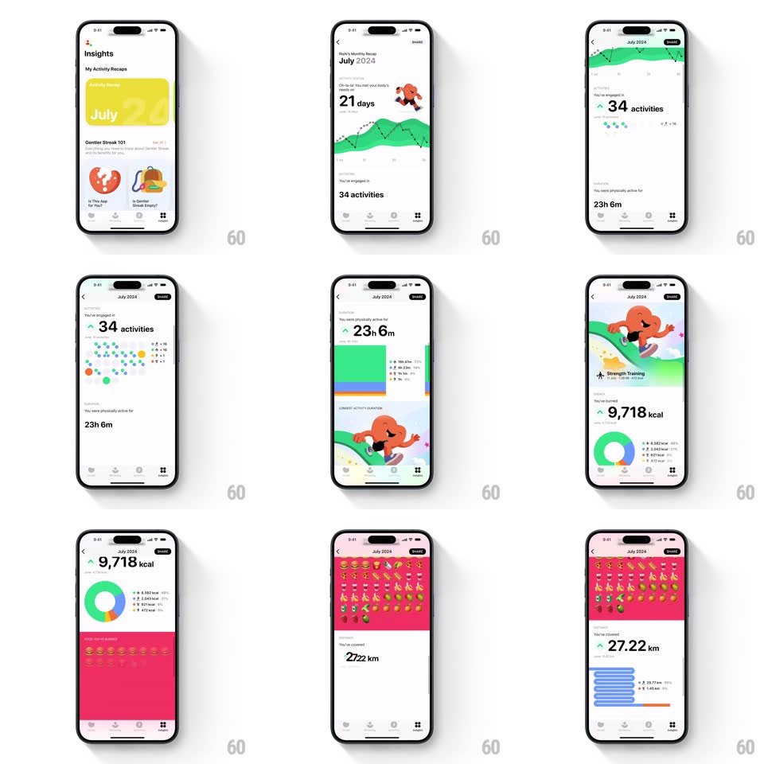

Media
Frame-by-frame

Rebuild this animation 1:1: Gentler Streak's monthly recap - a scroll-driven story where each stat section staggers in: active-days area chart, activity dot grid, duration stack, mascot illustration, calorie donut, food-emoji wall, and distance bars.

Rebuild this animation 1:1: Gentler Streak's monthly recap - a scroll-driven story where each stat section staggers in: active-days area chart, activity dot grid, duration stack, mascot illustration, calorie donut, food-emoji wall, and distance bars.
## Integration
Integration: stack-agnostic spec - springs given as stiffness/damping, timed motions as duration + curve; map every value to your framework and animation library of choice.
## Scene
The "July 2024" recap detail (from Insights > My Activity Recaps): stacked full-width sections - "21 days" with a green dotted area chart and running mascot, "34 activities" with a dot grid, "23h 6m" with stacked duration bars, a mascot-riding illustration with "Strength Training", "9,718 kcal" with a donut, a red "food you've burned" wall of burger/emoji rows, and "27.22 km" with horizontal distance bars.
## Motion spec
Pattern: scroll-triggered staggered section reveals.
- Each section enters when ~20% visible: its background block slides up (translateY 30px to 0, 350ms, ease-out) while the big number ticks up from zero (600ms, ease-out) and the label fades after (150ms delay).
- Charts animate on entry, once: the dotted area chart draws left to right (stroke, 800ms) with dots popping (scale 0 to 1, spring ~460/22, 20ms apart along the path); the activity dot grid fills in random order (30ms per dot); the donut sweeps to its arcs (700ms, ease-in-out); distance bars grow width-wise with 80ms stagger.
- The mascot illustrations bob gently (translateY +-5px, 2.2s sine) after entering.
- The food wall: emoji rows slide in alternating from left and right (250ms each row, 60ms stagger) on the red background.
- Header ("July 2024" + Share) stays pinned; sections pass beneath it.
## Calibration
- Every animation is enter-once; scrolling back up never replays or reverses.
- Numbers tick with tabular alignment - no layout wobble as digits grow.
## Reduced motion
Sections fade in; numbers set instantly.
## Don't miss
- Each section owns its background color (green, white, red/pink) - the color blocks are full-bleed.
- The donut's legend values tick up in sync with the sweep, not after it.